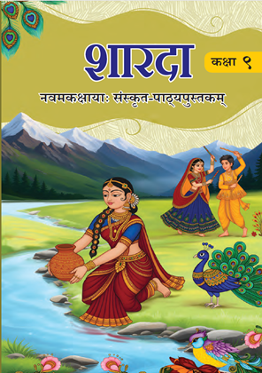

Class 10
NCERT Solutions for Class 10 Mathematics
Get chapter-wise mathematics solutions with clear explanations and step-by-step answers.
Explore Solutions →NCERT Solutions

“शारदा” कक्षा 9 की संस्कृत पाठ्यपुस्तक है। इसमें संस्कृत भाषा, भारतीय संस्कृति, जीवन-मूल्यों और ज्ञान की समृद्ध परम्परा को सरल एवं रोचक रूप में प्रस्तुत किया गया है।
| विवरण | जानकारी |
|---|---|
| पुस्तक | शारदा |
| कक्षा | 9 |
| विषय | संस्कृत |
| सत्र | 2026–27 |
कक्षा 9 संस्कृत की नई पाठ्यपुस्तक का नाम “शारदा” है।
“शारदा” संस्कृत की कक्षा 9 की पाठ्यपुस्तक है।
यह पुस्तक शैक्षणिक सत्र 2026–27 के लिए है।
शारदा पुस्तक में 11 मुख्य पाठ और 5 परिशिष्ट हैं।
पुस्तक में संस्कृत भाषा, भारतीय संस्कृति, जीवन-मूल्य, ज्ञान और भाषा-कौशल से संबंधित सामग्री दी गई है।
हाँ। इस वेबसाइट पर शारदा के अध्यायों के प्रश्न-उत्तर, शब्दार्थ, अभ्यास-कार्य, व्याकरण और अन्य अध्ययन सामग्री उपलब्ध कराई जाएगी।
हाँ। अध्यायवार प्रश्न-उत्तर और अभ्यास विद्यार्थियों को पाठ को समझने तथा परीक्षा की तैयारी करने में सहायता करेंगे।
सबसे पहले पाठ को ध्यानपूर्वक पढ़ें और उसका अर्थ समझें। इसके बाद शब्दार्थ, प्रश्न-उत्तर, व्याकरण और अभ्यास प्रश्नों का नियमित अभ्यास करें।
Explore more NCERT solutions and other resources with Saraswat Academy.
Get chapter-wise mathematics solutions with clear explanations and step-by-step answers.
Explore Solutions →Study important concepts, exercise solutions and chapter-wise mathematics answers.
Explore Solutions →Understand science concepts with detailed answers to textbook questions.
Explore Solutions →Explore chapter-wise science solutions, explanations and useful study resources.
Explore Solutions →Improve your English skills with detailed answers to textbook questions.
Explore Solutions →Improve your English skills with detailed answers to textbook questions.
Explore Resources →Improve your Hindi skills with detailed answers to textbook questions.
Explore Resources →Improve your Hindi skills with detailed answers to textbook questions.
Explore Resources →Improve your Hindi skills with detailed answers to textbook questions.
Explore Resources →Improve your Social Science skills with detailed answers to textbook questions.
Explore Resources →Improve your Social Science skills with detailed answers to textbook questions.
Explore Resources →Improve your Social Science skills with detailed answers to textbook questions.
Explore Resources →Detailed NCERT solutions for class 9 sanskrit.
Explore Resources →